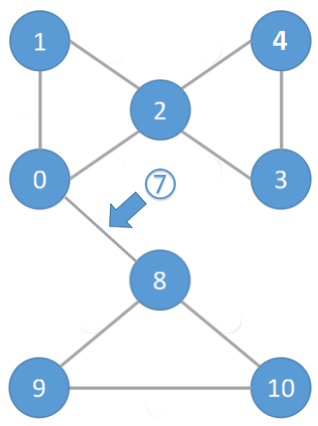

El Camino Más Corto en la Base de Datos

... y más con pgRouting
Presented by Vicky Vergara
“Dirán que andas por un camino equivocado, si andas por tu camino."
Antonio Porchia
Celia Virginia Vergara Castillo
- Economista
- Ciencias de la Computación
- Trabaja en Georepublic
- Desarrolladora de pgRouting
- Mexicana
- Conocida como Vicky
Disfrutar de FOSS4G Argentina!!!
Que es el
Proyecto PgRouting


Que hay en el
Proyecto PgRouting
osm2pgRouting
pgRoutingLayers
pgRouting
Usando el
Proyecto PgRouting
Crear una Base de Datos
createdb argentina;
psql -c "CREATE EXTENSION postgis" -d argentina
psql -c "CREATE EXTENSION pgrouting" -d argentina Obtener Datos SIG
BBOX="-58.44370, -34.57352, -58.43700, -34.57043"
wget --progress=dot:mega \
-O "argentinafoss4g.osm" \
"http://www.overpass-api.de/api/xapi?*[bbox=${BBOX}][@meta]"
Importar Datos a la Base de Datos
osm2pgrouting \
-f argentinafoss4g.osm \
-d argentina \
-U usuario -W password
Ejecutar un Query
SELECT * FROM pgr_dijkstra(
'SELECT gid AS
id,
source,
target,
cost_s AS cost,
reverse_cost_s AS reverse_cost FROM ways',
18, 16);
Resultados
seq | path_seq | node | edge | cost | agg_cost
-----+----------+------+------+-------------------+-------------------
1 | 1 | 18 | 98 | 0.729963776732285 | 0
2 | 2 | 65 | 188 | 0.609540796785944 | 0.729963776732285
3 | 3 | 139 | 34 | 0.779552735077638 | 1.33950457351823
4 | 4 | 15 | 67 | 12.7287743080311 | 2.11905730859587
5 | 5 | 42 | 36 | 10.6159737661904 | 14.847831616627
6 | 6 | 16 | -1 | 0 | 25.4638053828173
(6 rows)
Clasificación de Funciones (v2.5)
- Disponibles
- Propuestas
- Experimentales
Funciones Disponibles
Existen desde la versión 2.0
- pgr_dijkstra
- pgr_astar
- pgr_drivingDistance
- pgr_bdAstar
- pgr_bdDijkstra
- etc.
Funciones Propuestas
Propuestas para la versión 3.0
Se consideran estables para su uso
- Familia de functiones "Flow" (Flujo)
- Familia de functiones "withPoints" (con puntos)
- Categoría "Cost" (Costo)
- Categoría "Cost Matrix" (Matriz de Costos)
Funciones Experimentales
Necesitan más pruebas/correcciones
- Familia de functiones "Components" (Componentes)
- Familia de functiones "Contraction" (Contracción)
- Familia de functiones "VRP" (Problemas de Ruteo de Vehículos)
- pgr_lineGraph
Contribuciones de Estudiantes
Familia de funciones
"Components"
GSoC 2017
Maoguang wang
Xi'an Jiaotong University
pgr_connectedComponents
La complejidad del algoritmo pgr_connectedComponents usando DFS es O(V + E)
pgr_strongComponents

La complejidad del algoritmo pgr_connectedComponents usando el algoritmo de Tarjan basado en DFS es O(V + E)
pgr_biconnectedComponents

La complejidad del algoritmo pgr_connectedComponents usando el algoritmo de Tarjan basado en DFS es O(V + E)
pgr_articulationPoints
La complejidad del algoritmo pgr_connectedComponents usando el algoritmo de Tarjan basado en DFS es O(V + E)
pgr_bridges
La complejidad del algoritmo es O(V * (V + E))


Costos


Interesado en pgRouting?
- pgRouting: http://pgrouting.org
- Email: vicky@georepublic.de
- Website: http://georepublic.info